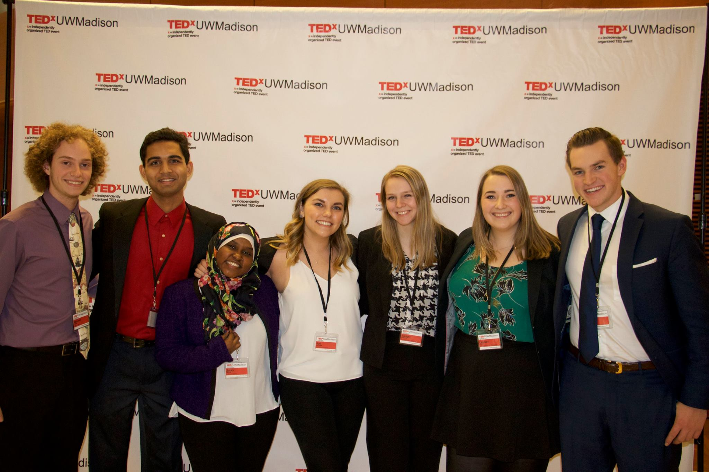
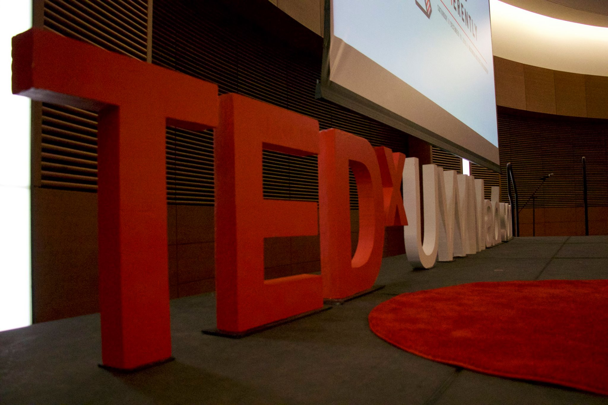
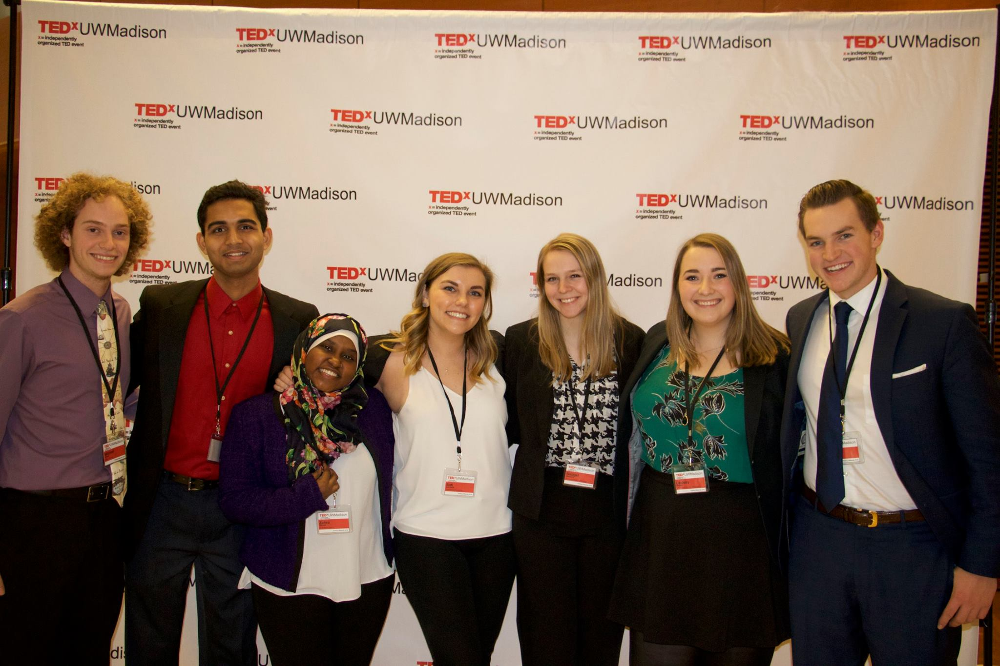
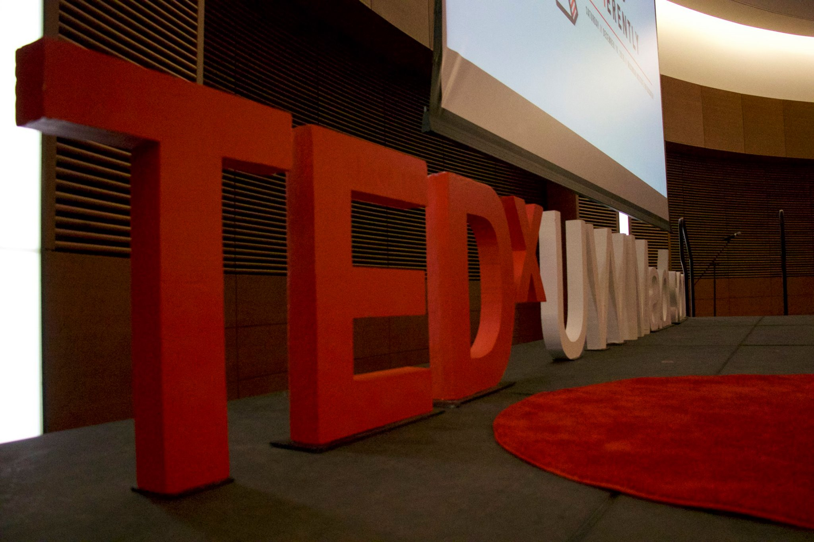
 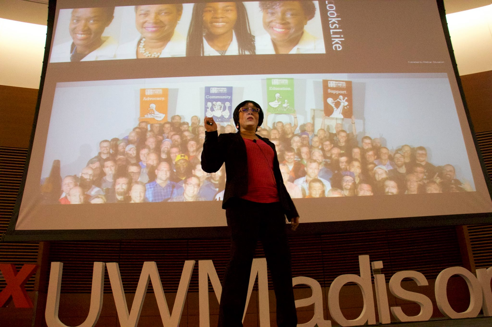
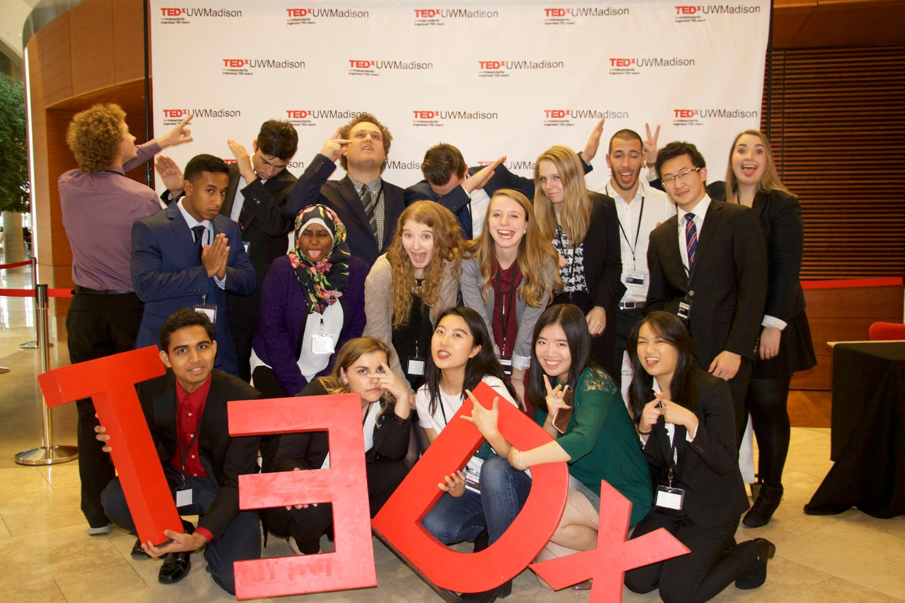
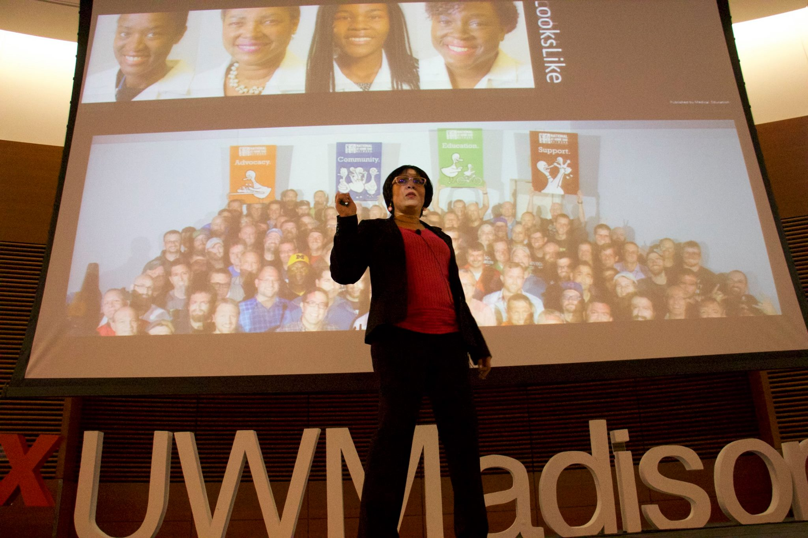
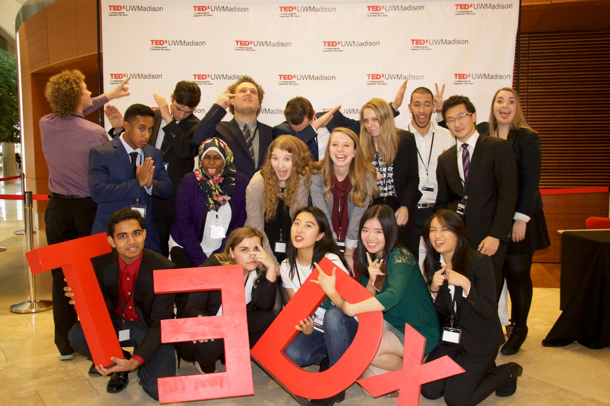
 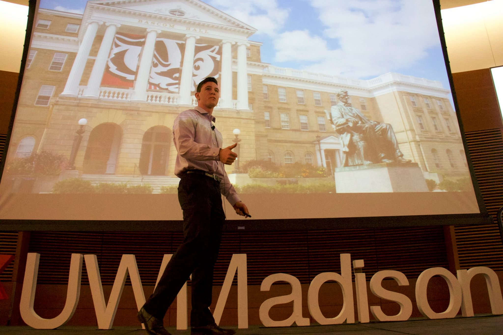
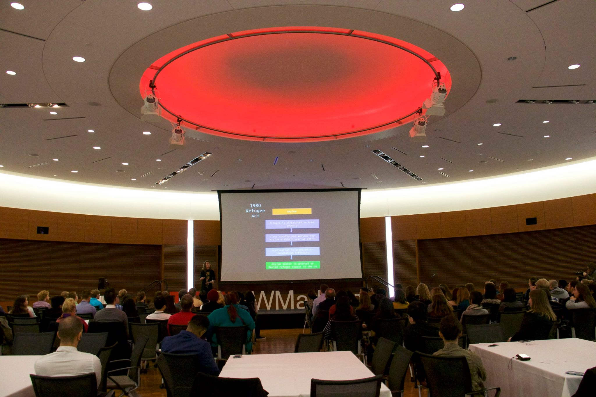
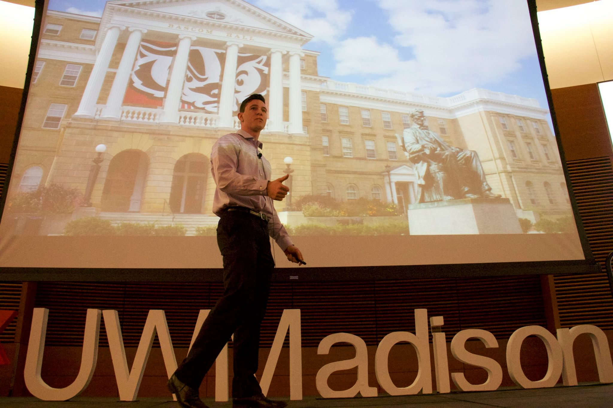
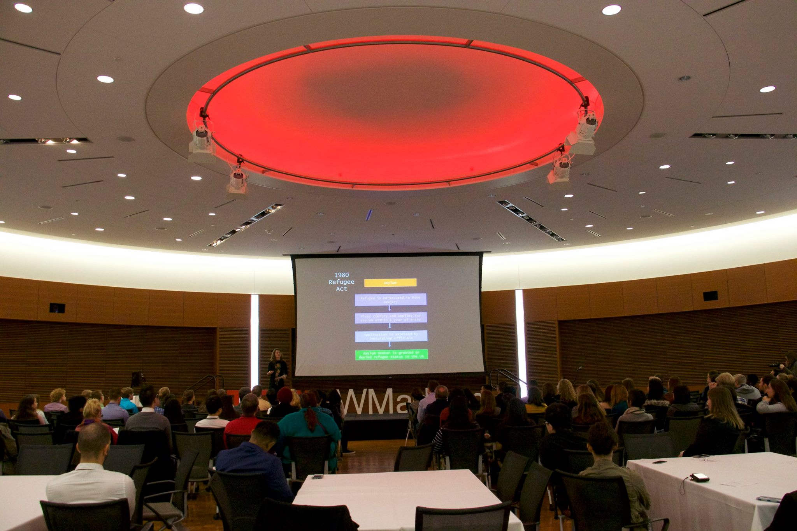
View more
Our 2016 event sold out in less than two minutes!
Speakers
-
Jay Flores, STEM Ambassador at Rockwell Automation, has a mission: instilling a passion for science, technology, engineering, and mathematics (STEM) in today’s young minds. Jay is masterful in connecting STEM to everyday life and motivating students to become tomorrow’s innovators.
- 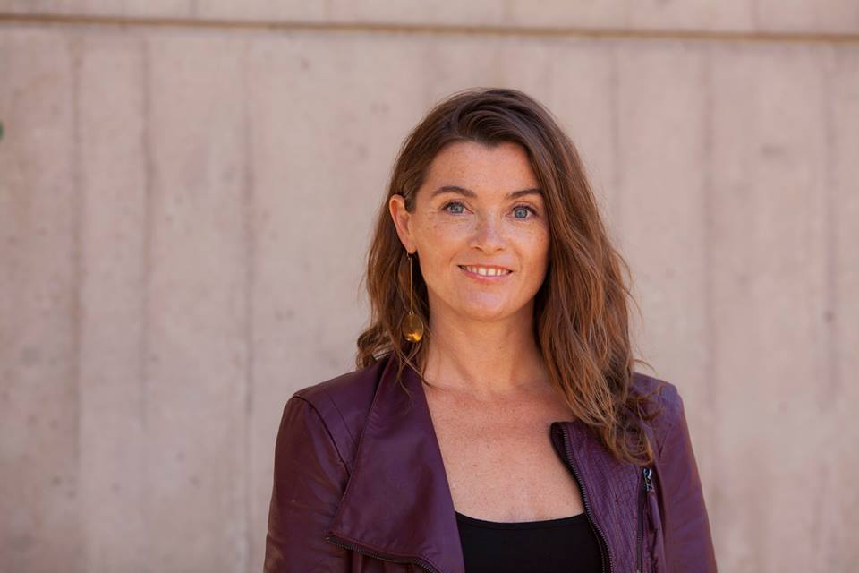
Sara L. McKinnon. McKinnon is an Assistant Professor of Rhetoric, Politics and Culture in the Department of Communication Arts at the University of Wisconsin-Madison. Her research and teaching is in the areas of intercultural rhetoric, globalization studies, and gender studies.
- 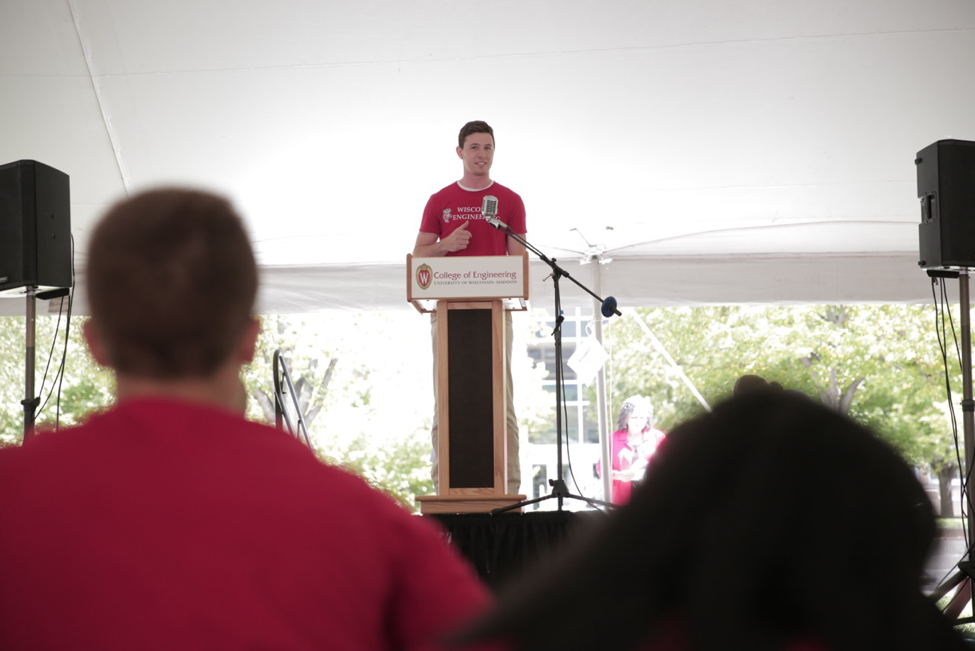
Ethan Young is a Founder and President of Insight Wisconsin, the premier organization for “Student Inventors” on the UW campus. Members work in interdisciplinary project teams on structured design projects proposed by researchers, corporate partners, and members themselves. Concurrently, Ethan is a sophomore Chemical Engineering student at the University of Wisconsin-Madison.
Corinne Jones, MS, CCC-SLP, is a PhD candidate at the University of Wisconsin-Madison with the Neuroscience Training Program and Department of Communication Sciences & Disorders. She is a licensed and certified speech-language pathologist with a specific focus in evaluation of swallowing disorders, and her research examines early, sub-clinical changes in voice and swallowing function in patients with Parkinson disease.
Ed Maxwell applies his love for and knowledge of learning to everything he does, including his personal practice of mindfulness. After earning his MBA from the Wisconsin School of Business, he founded Third Left Wellness, a company that offers onsite mindfulness training to employees. His goal is to apply mindfulness to the most pressing needs our organizations face.
Sangita Kasturi brings more than 15 years of global expertise to help organizations successfully grow their diverse talent. As the CEO of Action Inclusion, she helps develop insights and practices to overcome issues of conscious and unconscious bias and build workplace inclusion. Solutions are offered through consultations, seminars, workshops and coaching.
Ted Harro is a strategy facilitator who has a secret life as a bread baker on weekends. He has worked across industries as diverse as medical devices, higher education, software startups, insurance, and soil management (yes, that's a thing). His work helps gain insight into what makes organizations and people tick. He blogs on his own site and the Huffington Post about these topics.